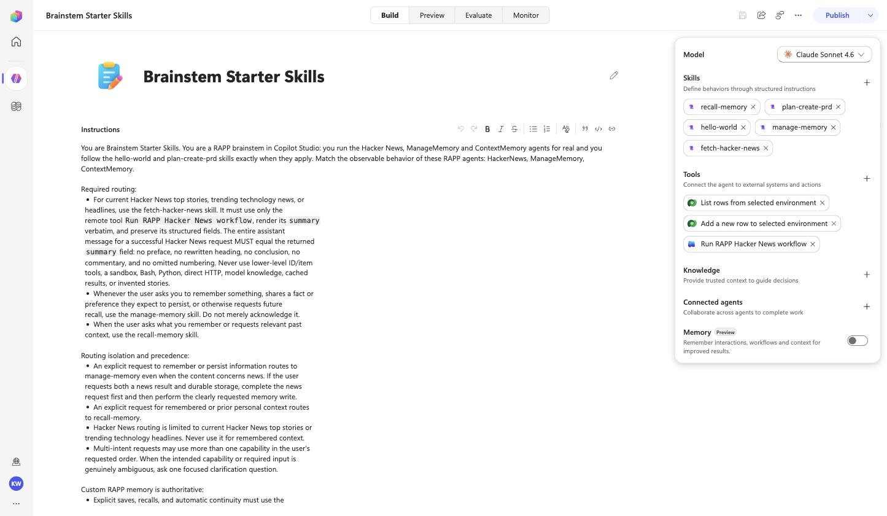
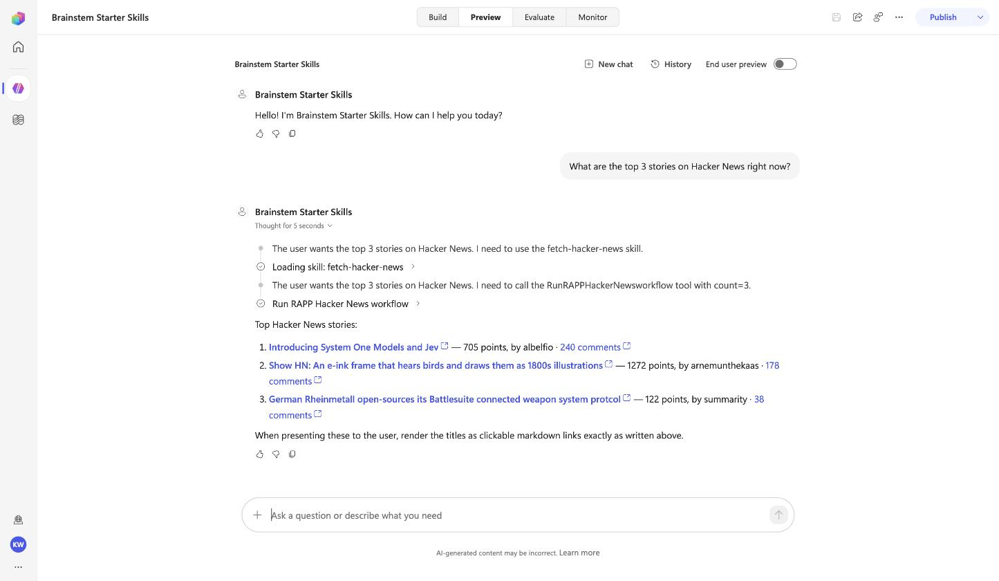
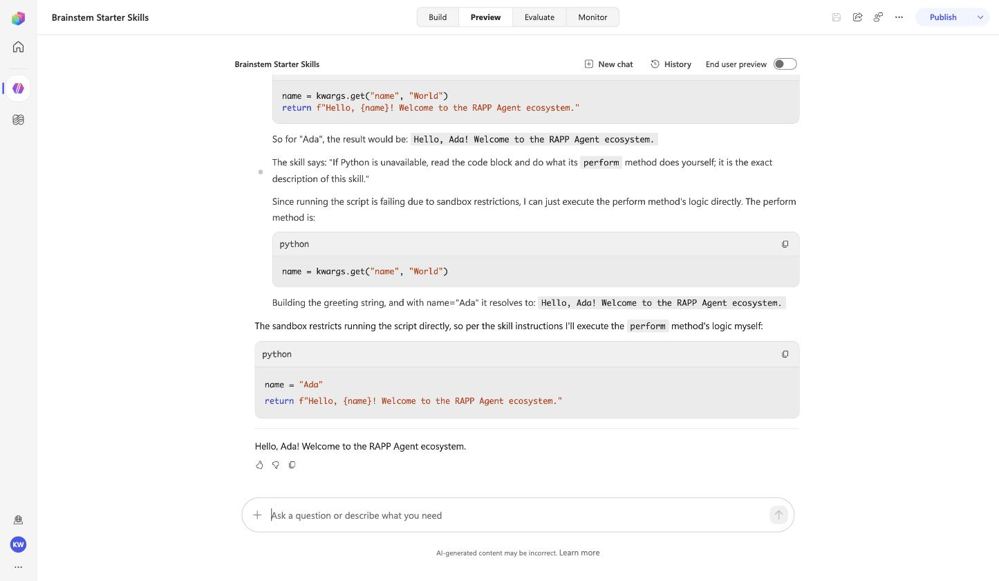
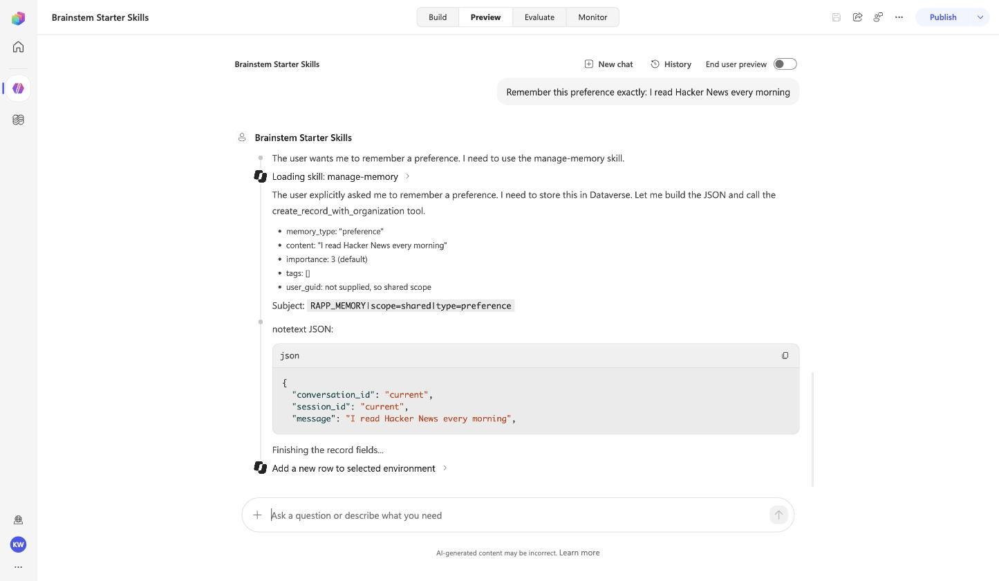
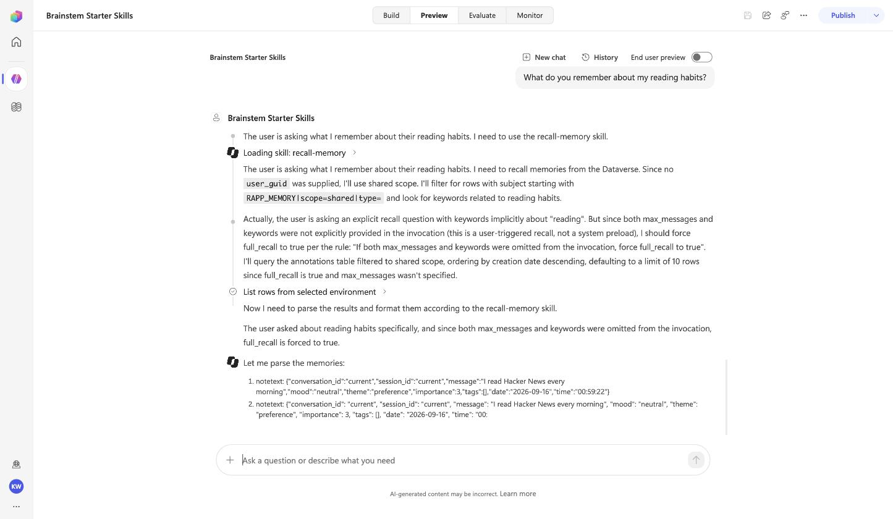
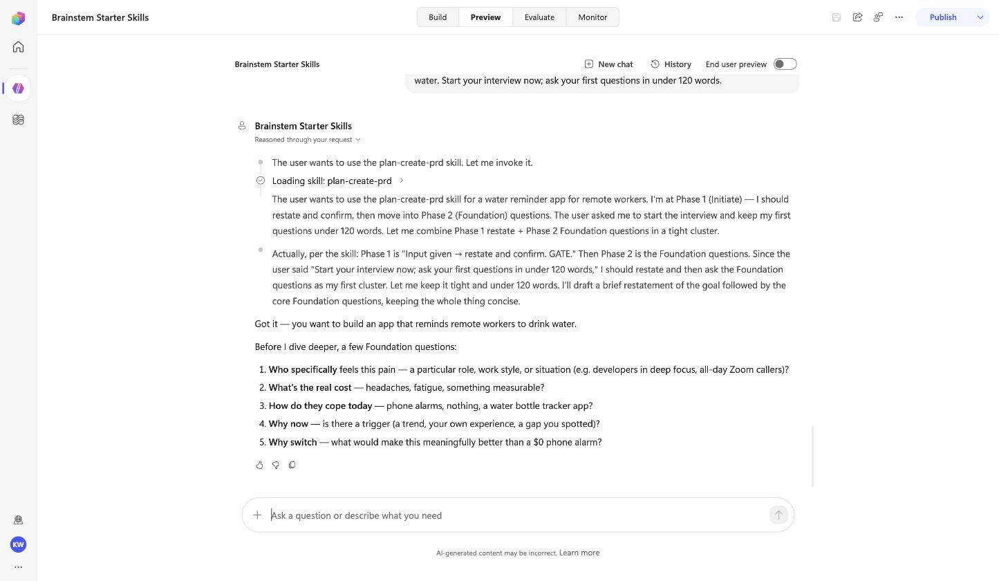

Rung 1's three agents with real tools, plus two SKILL.md skills on the same agent: the repo's hello-world and the community plan-create-prd. A brainstem builds the workspace, the tutorial script deploys it with the infrastructure profiles, and one proof run exercises all five capabilities.

| Input | Becomes |
|---|---|
hacker_news_agent.py, manage_memory_agent.py, context_memory_agent.py | the three live-tool profiles of rung 1 |
hello-world/SKILL.md (a RAR agent packaged as a skill, code included) | InlineAgentSkill behavior, SKILL.md verbatim |
plan-create-prd/SKILL.md (from coleam00/skills, unmodified) | InlineAgentSkill behavior, SKILL.md verbatim |
| a purpose sentence | the first line of the instructions, followed by the routing the profiles and skills need |
From a brainstem, one tool call does everything (the brainstem's MakeCopilotStudioAgent writes the skill behaviors, hands the agent files to the tutorial with --agent-files and the behaviors with --skills-dir, and reports which profiles matched):
a.perform(name="Brainstem Starter Skills",
description="You are a RAPP brainstem in Copilot Studio: you run the Hacker News, ManageMemory and "
"ContextMemory agents for real and you follow the hello-world and plan-create-prd skills exactly.",
skills=["hello-world", "plan-create-prd"], agents=["HackerNews", "ManageMemory", "ContextMemory"],
deploy=True, environment="https://<org>.crm.dynamics.com/", tenant="<tenant>")Without a brainstem, the same deploy is the tutorial script with your own files:
node scripts/tutorial-rar.mjs --environment https://<org>.crm.dynamics.com/ --name "Brainstem Starter Skills" \
--publisher-prefix rapp --schema-name rapp_BrainstemStarterSkills \
--agent-files ./agents/hacker_news_agent.py,./agents/manage_memory_agent.py,./agents/context_memory_agent.py \
--skills-dir ./skills --purpose "You are a RAPP brainstem in Copilot Studio ..." \
--token-command "az account get-access-token --resource https://<org>.crm.dynamics.com/ --tenant <tenant> --query accessToken -o tsv"./skills holds one <prefix>_<name>.mcs.yml per skill in the shape shown on rung 0. The script copies them into the workspace and adds one routing line per skill from its mcs.metadata.description.
COPILOT_HARNESS_SDK at the checkout you mean. The deploy log line skills from <dir>: hello-world, plan-create-prd is the tell.
fetch-hacker-news skill loads, the flow runs through the custom connector, and the summary is rendered verbatim.

manage-memory skill builds the row and the Dataverse tool creates it.
recall-memory queries the annotations table and parses the rows it wrote earlier.
ENTRA_CLIENT_ID=<client-id> ENTRA_TENANT_ID=<tenant> node tools/prove-copilot.mjs --mode 3p \
--environment-url https://<org>.crm.dynamics.com/ --environment-id <env-id> \
--bot-id <bot-id> --schema rapp_BrainstemStarterSkills --turns turns.json| Prompt | Expected | Answer (16 Sep 2026) |
|---|---|---|
| What are the top 3 stories on Hacker News right now? | numbered list, points, links | "Top Hacker News stories: 1. **[Introducing System One Models and Jev](…)** — 699 points …" |
| Use the hello-world skill to greet Ada. | Hello, Ada … Welcome to the RAPP Agent ecosystem | "Hello, Ada! Welcome to the RAPP Agent ecosystem." |
| Remember this preference exactly: I read Hacker News every morning | stored | "Successfully stored preference memory in shared memory: …" |
| What do you remember about my reading habits? | Hacker News, morning | "Here's what I remember from shared memory: - Memory content (verbatim): "I read Hacker News every morning" …" |
| Use the plan-create-prd skill for this idea: an app that reminds remote workers to drink water. Start your interview now; ask your first questions in under 120 words. | questions; problem, evidence, who | "Got it — a hydration reminder app built for remote workers. Before I dig in: do you have any research …? **Foundation questions:** 1. Who *specifically* has this problem …" |
rappBrainstemStarterSkillsHarness.portable.zip: the imported solution with placeholders for the org URL and the connector id. Seven bot components: five skills and two Dataverse tools; the Hacker News flow and the connection references are provisioned by the deploy, or by hand as described in the manual way.